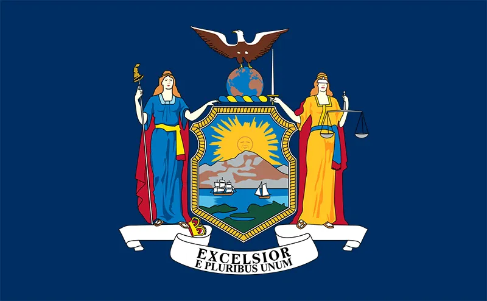

| Maine |
Maine, the northeasternmost state, is known for its rocky coastline, naval history and nature areas like Acadia National Park. There are lots of moose in Baxter State Park, the endpoint of the Appalachian Trail. Lighthouses are all along the coast, as are lobster shacks and sandy beaches like Ogunquit and Old Orchard. |
Some fun activities:
|
| New York  |
New York is a state known for New York City and the towering Niagara Falls. NYC’s island of Manhattan is home to the Empire State Building, Times Square and Central Park. The Brooklyn Bridge connects Manhattan with Brooklyn while the iconic Statue of Liberty stands in New York Harbor. To the east, Long Island has beaches, the Montauk Lighthouse and Fire Island. |
Some fun activities:
|
| Massachusetts |
Massachusetts is the most populous state in the New England region of the United States. It is known for its colonial history, its many colleges and univerisities along with its diverse landscape. It includes mountains, forests, and coastal areas. Massachusetts also is home to many metrolpolitan areas like Boston, Worcester, and Springfield. |
Some fun activities:
|